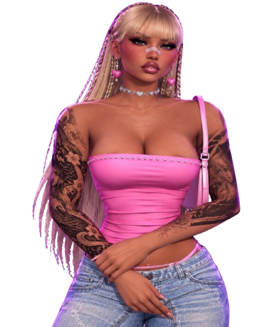

Eu sempre dava um jeito de aparecer
Por onde você ia nas cidades, eu acabava indo também. Não era por obrigação, muito menos por acaso. Eu gostava mesmo era de ficar perto de você, participar das resenhas e aproveitar mais um pouco da sua companhia.
UMA JORNADA FEITA COM AMOR
Algumas pessoas são luz, mesmo quando tudo ao redor parece noite.

A PERSONAGEM PRINCIPAL DESTA HISTÓRIA01 / ONDE TUDO COMEÇOU
A gente se encontrou no GTA RP, sem imaginar que aquela amizade ia ganhar um espaço tão grande na vida. No começo, eram as histórias da cidade, as resenhas e o seu jeitinho baiano que sempre dava um jeito de arrancar uma risada minha.
Quando eu me sentia sozinho, você aparecia. Nunca me deixava de lado. E, sem perceber, foi fazendo de um lugar virtual um cantinho onde eu me sentia acompanhado.
02 / QUANDO O JOGO VIROU VIDA
E acho que foi assim, sem a gente perceber, que nossa história ficou tão especial.
Por onde você ia nas cidades, eu acabava indo também. Não era por obrigação, muito menos por acaso. Eu gostava mesmo era de ficar perto de você, participar das resenhas e aproveitar mais um pouco da sua companhia.
Você nunca foi de aceitar que alguém falasse mais alto só por ser homem. Se chegassem querendo meter bronca, você respondia à altura. Esse seu jeito firme sempre me fez rir e, ao mesmo tempo, admirar ainda mais você.
Quando alguém aparecia na Facção Israel querendo arrumar confusão, eu chegava para ficar do seu lado. Eu gostava de te proteger e de mostrar que você não estava sozinha. No RP, eu era seu segurança particular — e olha que trabalho não faltava, KKKK.
Não foi uma única lembrança que fez você se tornar minha mãe. Foram todos esses pequenos momentos, juntos.
03 / QUANDO VOCÊ VIROU MINHA MÃE
Eu já gostava de estar com você no RP. Já fazia questão de aparecer onde você estivesse e de ficar do seu lado. Mas teve uma coisa que mudou tudo: você começou a se preocupar comigo fora dali.
Você percebia quando eu não estava bem, mesmo quando eu não dizia nada. Ia atrás de mim, perguntava, demonstrava que se importava. E foi nesse cuidado, tão seu, que eu entendi que o que a gente tinha não era só uma amizade de jogo.
Eu te chamava de mãe porque, de alguma forma, você já tinha se tornado uma.
04 / O QUE EU ADMIRO EM VOCÊ
E talvez eu não fale isso tanto quanto deveria.
TALVEZ EU NÃO DIGA SEMPRE, MAS EU VEJO E ADMIRO TUDO ISSO.
05 / O QUE EU QUERO QUE VOCÊ SAIBA
Ter você nesses três lugares é um dos maiores presentes que esse jogo me deu. Obrigado por confiar em mim, me apoiar e também cuidar de mim fora da cidade.
Considera esse abraço entregue, mãe. Com todo o carinho que às vezes eu não consigo colocar em palavras. ♡
06 / UMA CARTA, MÃE
nunca duvide do quanto você é especial para mim. Obrigado por ser essa mulher de personalidade forte, que não abaixa a cabeça pra ninguém, por acreditar em mim e por estar do meu lado. Eu posso ser fechado e meio ruim pra demonstrar sentimento, mas sou muito grato por ter você na minha vida. Te amo, mãe.
Tenho mais uma coisa pra você FEITO COM CARINHO, DO SEU FILHO DE RP.